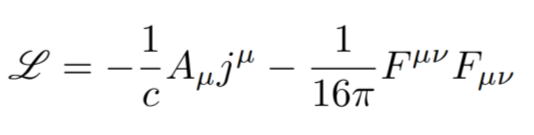
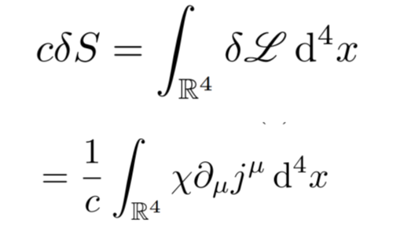
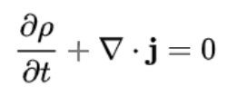

-
La ecuación de continuidad es una ecuación que describe el transporte de una cierta cantidad. Es una ecuación particularmente simple y potente cuando se aplica a una cantidad que se conserva, en este caso nos concierne la carga eléctrica. Una variedad extensa de fenómenos físicos pueden ser descritos usando la ecuación de continuidad. En este caso, se demostrará la ecuación de continuidad para el campo electromagnético utilizando la invarianza gauge de la acción asociada:
Dada la cantidad lagrangiana
Realizando la variación de la acción, nos quedaría algo tal que:
Dada la cantidad lagrangiana

Esta ecuación, que es realmente una condición expresada como una contracción tensorial, compactifica una suma de componentes, que, si se despliega, hallamos su forma equivalente (y más popular):
